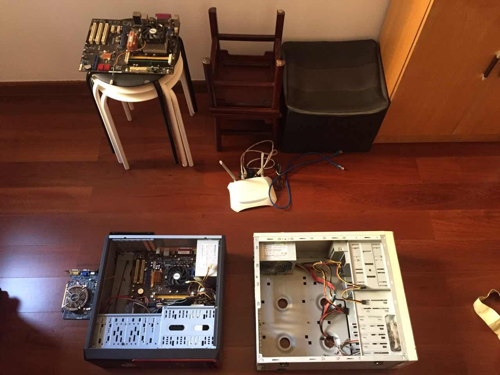

itWroks
唠叨
昨天休假在家给我妈修理早就步入老年的台式电脑。我打开机箱，开始倒腾各种部件。我本来以为我会非常厌倦这种修理，但却渐渐乐在其中。我一边上着螺丝、安排着电源的走线，一边在想这是为什么。
其实从我第二台电脑开始就已经是自己配置的硬件，自己亲手组装。我还记得当时的认真细致，战战兢兢。最难忘的是按下开关的一瞬间 everything works ! 这样的喜悦往往还会出现在另外两件事情上：1.破解某些东西；2.用一些tricks 让某件事情自动化。我再一次想起「创造一个能用的东西」总能让我兴奋不已，动力满满。
工作这些年有起有伏，有对行业迷茫的时候，有对团队迷茫的时候，有对自己迷茫的时候，但我发现我对这种创造东西的感觉一直没变。就像一个放满东西的房子，它就在某个角落里，很小，不如其他东西那样魁梧，但它的力量很大，只要一丝缝隙就能发出光芒。它源自我小时候在家里做的各种新奇的小实验和模型。我希望到了80岁的时候，当我再按下那个开关，我还能兴奋的握紧双手 it works！
3th Dec 2017